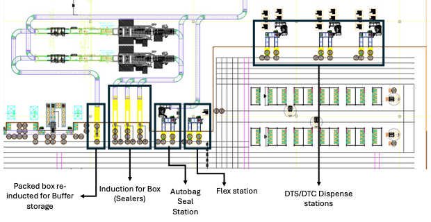

13 September 2026 · provisional geometry
Post-pick handoffs
Five extraction stations, three sealer drop-offs, and one sealed-box pickup. Their processes determine which orders can use them.
Source and placement
DoO Draft 2.0 §4.3 gives the working equipment quantities. Figure 5.2 establishes the relative arrangement below. These are draft quantities, not a released procurement baseline. The figure is a raster image embedded in an EMF; its pixels were recovered directly after the PDF conversion omitted it.

The existing three eastern endpoints retain their coordinates and become DTS/DTC dispense stations. Six decant approaches are grouped into the western 26 metres to make room for the new handoffs. Racks, EasyLoops, floors and fleet declarations are unchanged. New approaches start one row inside the forecourt, leaving an unrestricted entrance row across its grid seam.
Approximate locations: the table gives presentation-cell positions in the current map. Western positions follow the drawing's relative order and available floor columns; they are not surveyed CAD coordinates. Each endpoint has its own presentation and approach cells. Shared downstream equipment capacity remains unmodelled.
| West to east | Count | Approximate X | Current use |
|---|---|---|---|
| Sealed-box pickup | 1 | 31.1 m | Declared pickup and approach; reserved for future re-induction work. Never supplies a new empty box. |
| Sealer drop-off | 3 | 35.4, 38.8, 42.2 m | Completed boxes from EasyLoop. |
| 3P/CR bagging | 1 | 47.3 m | Reusable order totes on the temporary direct/sorter routes. |
| Flex | 1 | 52.4 m | Completed SIOC trays under the current approximation. |
| DTS/DTC dispense | 3 | Existing eastern positions | Reusable order totes on the source buffer route, including when the throughput setting skips buffer storage. |
What this pass simulates
The existing order container still goes through EasyLoop. Outbound selection now filters by container and exit-path traits before planning travel. A completed box goes to a sealer drop-off, a tray to Flex, and a tote to the appropriate bagging/dispense group. The normal handoff remains the existing configurable nine-second dwell. Empty reusable totes and trays return to storage; boxes leave the model at the sealer handoff.
The throughput preset still releases all orders at T0 and bypasses buffer storage. The canonical scenario retains its existing timing and buffer settings. Both workflow-isolation switches retain their previous meaning. Legacy maps without declared outbound roles retain their common extraction pool; a partially classified map cannot silently fall back to an unclassified port.
Initial validation
A 20-minute full-map run completed 369 picks (1,107 picks/hour) with normal extraction and box induction. This is an initial flow check, not a sustained-throughput result. The map and routing gates pass; the relocated decant approaches are reachable, but putaway operation remains unvalidated. See the validation record and run provenance.
Buffer-enabled validation
The eight-hour headless baseline now enables order buffering while keeping normal extraction and box induction. See the buffer review for the causal hypotheses, current release policy, incorrect buffered-box sequence, capacity discrepancy and measurement method. The earlier throughput preset continues to bypass the buffer for controlled comparisons.
Still to implement or confirm
- Deferred until later this week by Daniel on September 13; not today's work: sealing, labelling, shared equipment capacity, and returning sealed DTS/DTC boxes through re-induction to buffer or dispense. Deliberately retain the sealer handoff as the simulation boundary for boxes while the other flow and scheduling issues are resolved.
- The CSV's DS/SC/3P mapping to DTC/DTS/3P/Cross-Region. Existing DS→buffer and SC/3P→direct/sorter assumptions remain. SC totes temporarily use the bagging endpoint; that is not a confirmed channel mapping.
- SIOC source-tote-to-Flex work without EasyLoop. Adding Flex does not implement that separate workflow.
- Surveyed cell positions, approach lengths, HTM pickup/drop dwell, and operator/equipment service times. Three sealer inputs do not establish three independent sealing machines.